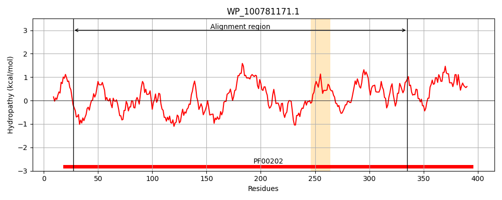
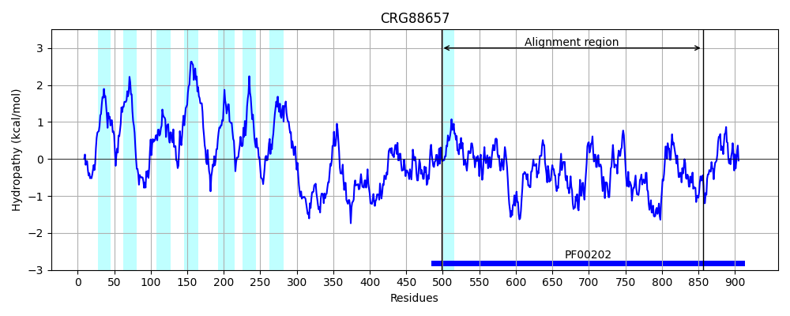
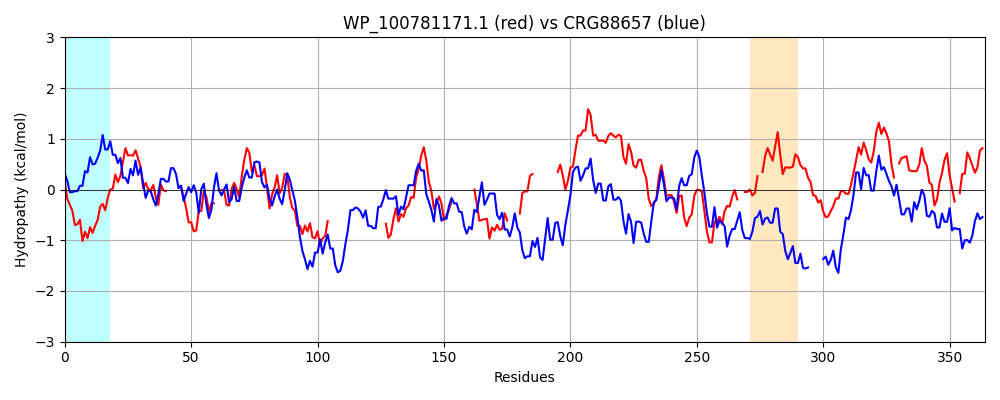

Hit Accession: CRG88657
Hit TCID: 9.B.313.1.2
Hit Description: gnl|BL_ORD_ID|2913 gnl|TC-DB|CRG88657|9.B.313.1.2 4-aminobutyrate aminotransferase / (S)-3-amino-2-methylpropionate transaminase [Talaromyces islandicus]
Mach Len: 364
e:0.000000
Query TMS Count : 1
Hit TMS Count: 8
TMS-Overlap Score: 0.000000
Predicted Substrates:None
BLAST Alignment:
Score: 211 , Bit scores: 85 bits, E-value: 5.0e-18, Alignment length: 364, Percentage identity: 25
Query: 27 RAAGSRVWDQQGKEYIDMAGGIAVNALGHAHPALAQALQDQ-----LAKLWHIGNGYTNE--PVLQLAKTLVQSTFADKVFFCNSGAEANEAALKLARKYAHDKF----------------------GGEKSEIIAFNHAFHGRTLFTVSVGGQ--------PKYSSDYAPLPQGI----THLPYN---------DIEAVTAVISSRTCAVIVEPIIGEGGVIPADPAFLQALRTLCDRHQATLIFDEVQTGAGRTGHLYAYQHYNV--VPDILT-SAKGLGGGFPIGAMLAKEAWAQVFQPGTHGTTFGGNPLAATVANAVLAHLDTP-LLAGVGERHALIVDQLNAISARY-DAFSAVRGTG 335
++ G+ + D G +D+ IA +G+ +P LA A+ L +GN + + +L+ ++VF +G++ANE A K A Y + G I++F AFHGR ++S P + AP P H+ N + E + + AV+VEPI EGG A PAF Q LR + R+ I DEVQTG G TG +A+ H+N+ PD++T S K G+ G + +P T+ G+P A + A+L +++ L+ + + L +++ +Y A +RG G
Sbjct: 498 KSVGNYLVDLDGNVLLDVYAQIASIPVGYNNPHLAAAVNTPEMVRALIDRPALGNFPSADWSNILKTGLLRAAPKGLNQVFTALAGSDANETAYKAAFMYRRQQERGGANVDFSDADTTSAMLNQSPGSPNMSIMSFKSAFHGRLFGSLSTTRSKPIHKLDIPAFDWPQAPFPALKYPLEEHVQENAAEEKRCLAEAERIIKEFHNPVAAVVVEPIQSEGGDNHASPAFFQGLRDITKRNNVLFIVDEVQTGVGATGKFWAHDHWNLQSPPDLVTFSKKAQTAGYYYGNPALRPN-----KPYRQFNTWMGDPARAILFRAILEEIESKGLVENTAATGDYLYNGLESLAQKYPQAIQNLRGKG 856 | Protein Hydropathy Plots: |
|---|
|  |  |
Pairwise Alignment-Hydropathy Plot:
|
|---|
|  |